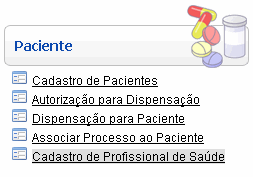
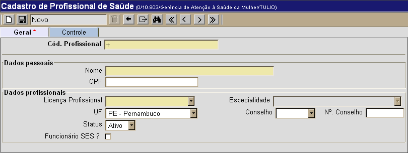
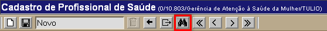
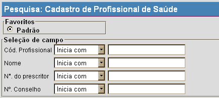

Cadastro de Profissionais de Saúde [ Voltar ]Utilize este formulário para criar e editar o cadastro de profissionais de saúde. O formulário "Cadastro de Profissionais de Saúde" encontra-se dentro do menu "Paciente". 
Ao clicar no nome do formulário, o sistema exibirá a seguinte tela: 
Selecione uma das duas opções abaixo para ver o passo-a-passo: Cadastrar
profissional de saúde Cadastrar profissional de saúde1º Passo: informe os dados do profissional que deseja cadastrar. Os campos em amarelo são obrigatórios.Observação: o campo "Cód. Profissional" apresenta um sinal de mais "+" por padrão. Desta forma, assim que a cadastro é salvo, o sistema lhe atribui o próximo número disponível. 2° Passo: clique no botão para concluir o cadastro.
Editar cadastro existentePara editar os detalhes de um profissional
já cadastrado, siga os passos abaixo: 
Em seguida, utilize os filtros de pesquisa existentes para facilitar a localização do registro desejado. Para mais informações sobre outros recursos e funcionalidades da pesquisa, favor ver o manual Introdução ao Sistema.  Assim que localizar o profissional, selecione-o com um clique. A tela do "Cadastro de Profissionais de Saúde" será exibida com os dados atuais para o profissional. |
 da
barra de
botões.
da
barra de
botões.